Version 0.9.251 · sortie prochaine
Du croquis au copeau, dans une seule fenêtre.
VerdierCAM dessine la pièce, calcule les parcours, simule la matière enlevée et pilote la défonceuse. Pensé dans un atelier de menuiserie, pour le bois d'abord — et éprouvé sur une vraie machine.
- Linux et Windows
- 18 familles d'opérations
- Pensé et écrit en français
- Licence perpétuelle, sans abonnement
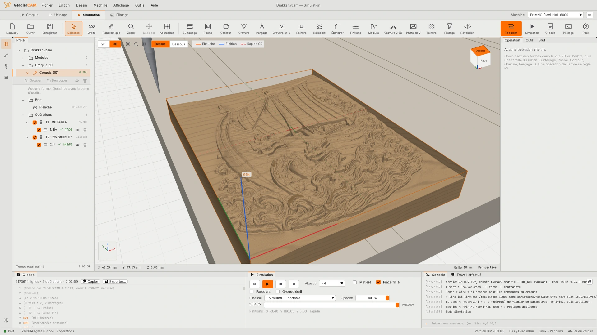
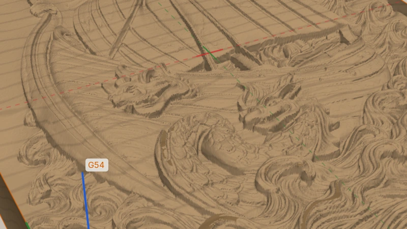
Capture réelle de la version 0.9.251
- 18familles d'opérations
- 8commandes numériques servies
- 2systèmes, Linux et Windows
- 0abonnement
- 0connexion nécessaire
Quatre établis, un seul document
Pas d'export entre deux logiciels, pas de fichier intermédiaire à rouvrir quand une cote change. On corrige le croquis, les parcours se recalculent, la simulation suit, la machine reçoit le bon programme.
- 01
Croquis
Tracer, contraindre, coter. Importer un SVG, un DXF ou une esquisse FreeCAD.
- 02
Usinage
Choisir les formes, l'opération, la fraise. Les parcours se calculent en tâche de fond.
- 03
Simulation
Voir le bois se creuser, passe après passe, avant de lancer la machine.
- 04
Pilotage
Envoyer le programme à une machine GRBL ou grblHAL, depuis la même fenêtre.
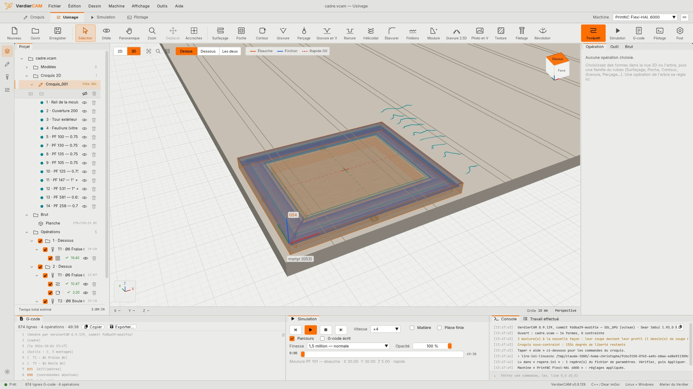
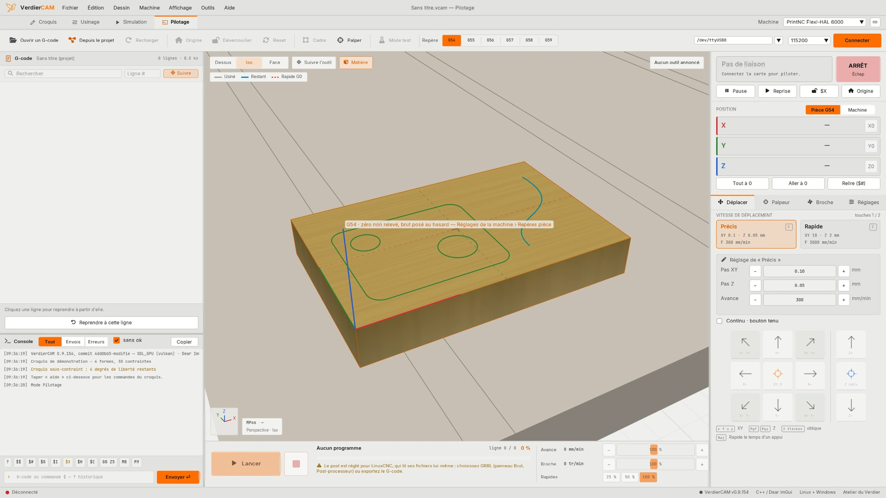
Un vrai croquis contraint, avec les gestes de FreeCAD
Les formes ne sont pas des dessins figés : ce sont des points, des traits et des arcs tenus par des contraintes. On tire un point, le solveur fait suivre le reste. On tape une cote, la pièce prend la bonne taille.
- Les raccourcis de FreeCAD : GL pour une ligne, KD pour une distance, C pour une coïncidence.
- La planche fait partie du dessin : on cote depuis un bord, et ce qui en dépend suit.
- Une expression dans tous les champs :
240/2,W/2,3in. - Import SVG, DXF et FreeCAD — le dessin importé reste un croquis qui se contraint.
- Texte en polices monotrait, ou dans toutes les polices TrueType et OpenType du poste.
- Contour extérieur : un dessin compliqué — une guitare de 1 857 courbes — donne son seul tour, en une forme fermée prête à découper.
- Des post-its sur la vue : vos notes et la photo de vos croquis papier, collées d'un Ctrl+V, enregistrées avec le document.
- Réseaux liés à l'original : une cote changée sur le premier logement change toute la série, le pas tient en une cote — et le croquis ne gagne aucune liberté.
- Imbriquer sur la plaque : des pièces quelconques posées au plus serré, écart entre elles garanti, rotations permises — de quoi ne pas gâcher une plaque chère.
- Mettre à l'échelle pour remplir le brut, sans déformer le dessin ; l'import d'un SVG signale les poussières laissées par le logiciel de dessin.
- Lignes, arcs, cercles, ellipses, oblongs, courbes de Bézier. Congés, chanfreins, décalages, réseaux, symétries, ciseaux, prolonger. Annuler et refaire sur tout, jusqu'au glisser d'un point.
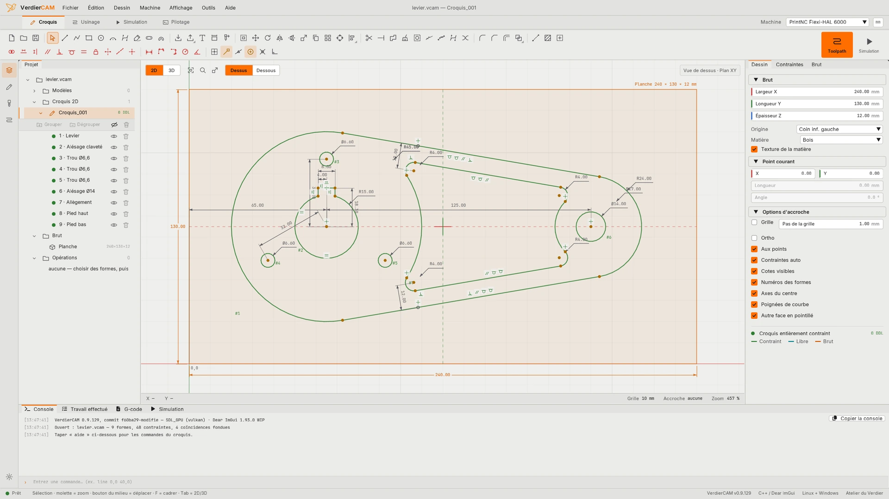
Des variables, des boucles — et une IA peut l'écrire
Le croquis s'écrit aussi en quelques lignes, à la façon d'OpenSCAD : on change un nombre en tête du fichier, on rejoue, toute la pièce suit. Chaque forme tracée à la souris s'inscrit dans la console comme la commande qui la refait.
dents = 44; bcd = 104; c = [101, 101];
planche([202, 202, 3]);
p = pignon(c, dents); // profil de chaîne, en vrais arcs
pour (i = [0 : 3]) {
t = cercle(c + bcd/2 * [cos(90*i), sin(90*i)], 5.25);
diametre(#t, 10.5);
}- Variables, calculs, boucles, conditions, modules et fonctions ; mots-clés en français (ceux d'OpenSCAD sont compris aussi).
- Les contraintes et les cotes aussi : le croquis écrit sort entièrement contraint.
- Une IA l'écrit à partir de la page du langage : quand une ligne ne passe pas, la console dit laquelle et pourquoi, à recopier tel quel.
- Pignons pour chaîne à la norme (creux, flancs tangents, tête), oblongs et polygones posés par leur centre.
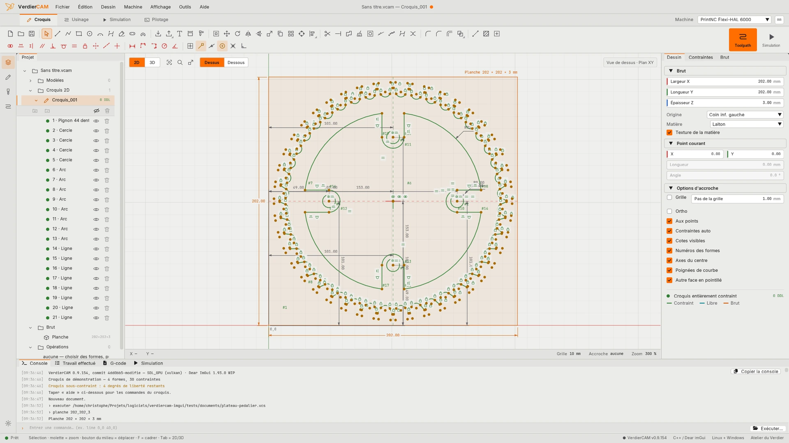
18 familles d'opérations, des réglages qui comptent
Des classiques du panneau aux pièces tournées, aux reliefs et aux pièces usinées sur les deux faces. Chaque opération se règle une fois, et se rappelle sur la suivante.
- Avalant ou opposition, rampe en zigzag ou en hélice.
- Poche en zigzag, concentrique, spirale, en équerres ou adaptative.
- Cliquer les zones à vider, comme dans VCarve : un clic dans une surface, Ctrl+clic pour en ajouter ; des zones voisines se vident d'un seul parcours. Les bords posés sur le tour de la pièce s'ouvrent d'un bouton, la fraise sort dans le brut.
- Rainure en T, queue d'aronde, trou de serrure : entrée et sortie hors du brut, la gorge du centre vérifiée — et créée d'un clic. Une passe qui ferait frotter la tige est refusée, la raison dite.
- Modèles de parcours : une opération réglée se rappelle sur une autre, fraise comprise.
- Bibliothèque de fraises, fraises de forme dessinées à partir de leur profil et cotées sur leur dessin, calculateur de régimes.
- Dépassement en fin de tour : la fraise repasse sur le début du contour, la marque d'entrée s'efface.
- Surépaisseur négative pour une fraise usée ou un ajustement serré : −0,2 enlève 0,2 mm de plus, et le dessin des profondeurs montre les parois reculer.
- En gravure 2.5D, l'ébauche s'arrête à ce que la fraise de finition pourra reprendre : pas de sillon au pied des parois.
- Gravure en V entre les traits : ce qui sera creusé se peint sur le dessin avant le calcul, et une fraise droite vide les fonds plats avant la pointe.
- Peau d'oignon pour les plaques minces et les composites : les pièces tiennent par un voile jusqu'à la dernière passe, sans onglets à poncer. Carbone et G10 parmi les matières.
- Importer une bibliothèque de fraises Fusion 360, comme en exportent les fabricants : cotes et régimes par matière repris, la source notée sur chaque fraise.
Découper et évider
- ProfilSuivre le contour, à l'intérieur ou à l'extérieur du trait.
- PocheÉvider l'intérieur d'un contour fermé.
- SurfaçageDresser la face supérieure du brut.
- RainureAu diamètre de l'outil le long d'un trait.
- FinitionsPasse de finition à la cote : les parois (contour) ou le fond (balayage fin).
Percer et fileter
- PerçagePercer au centre d'un cercle, au diamètre de l'outil, avec débourrage.
- HélicoïdalPercer ou aléser en descente hélicoïdale.
- FiletageFileter un trou ou un tenon à la fraise à fileter, en hélice.
Graver
- GraverLe trait à faible profondeur.
- Gravure en VÀ profondeur variable selon la largeur.
- ÉbavurerChanfreiner les arêtes du dessus à la pointe V, après la découpe.
- Photo en VUne photo gravée à la pointe en V, en lignes plus profondes là où l'image est sombre.
- TextureDes coups de gouge à la boule, en rangées irrégulières : le bois travaillé à la main.
Volumes et reliefs
- Gravure 2.5DUn modèle 3D (STL, OBJ ou image) : ébauche à la fraise droite, finition à la boule en option.
- MoulureDeux formes — la première est le rail, la seconde la coupe transversale.
- RévolutionUn cercle (son centre est l'axe), puis le demi-profil, du centre vers le bord — une assiette, un bol.
Usiner les deux faces
- GoupillesDeux trous symétriques, à travers le brut et dans le martyr : retournée sur ses goupilles, la pièce retombe à sa place.
- ButéeUn logement dans le martyr, d'équerre au coin d'origine : le brut y est poussé avant chaque face.
Trois façons de travailler, les mêmes calculs
Au premier lancement, VerdierCAM demande comment on veut travailler. Seule la présentation du panneau d'usinage change : les réglages et le G-code sont les mêmes partout, et on passe de l'un à l'autre à tout moment.
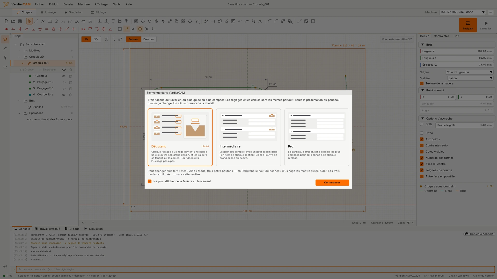
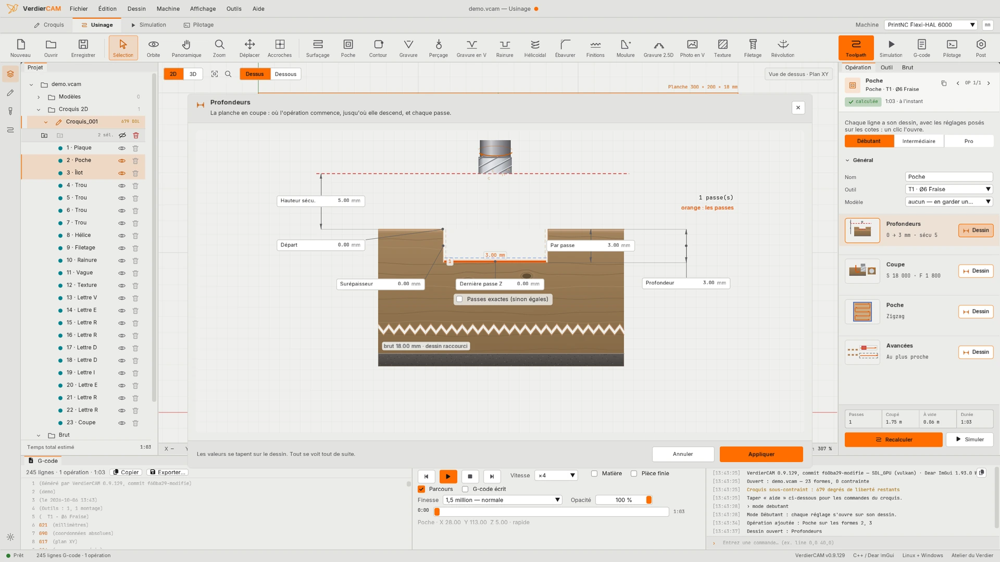
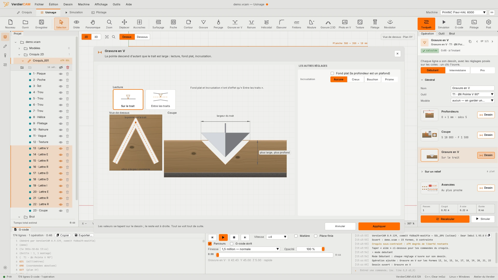
Une photo devient un bas-relief, sur votre ordinateur
La gravure 2.5D prend un modèle STL ou OBJ, ou une image en niveaux de gris jusqu'au PNG 16 bits : ébauche à la fraise droite, finition à la boule ou à la boule conique.
- Relief par IA : une photo devient une carte de hauteur, avec le modèle Depth Anything 3 réécrit en C++ — sans Python et sans connexion.
- Réglage bas-relief qui écrase les falaises et garde les détails ; calcul en tuiles pour les grandes images.
- Et aussi : Photo en V, Texture de gouge, Moulure le long d'un rail, Révolution pour une assiette ou un bol.
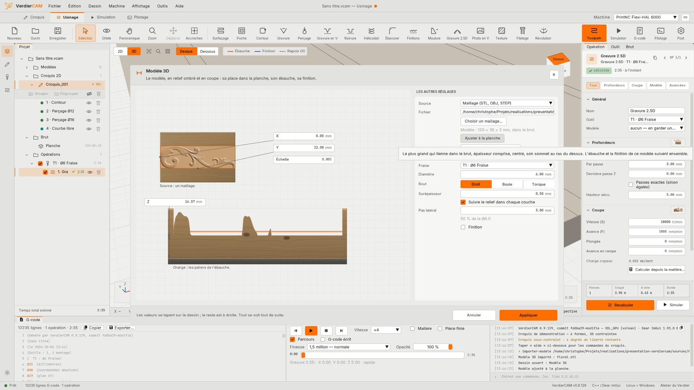
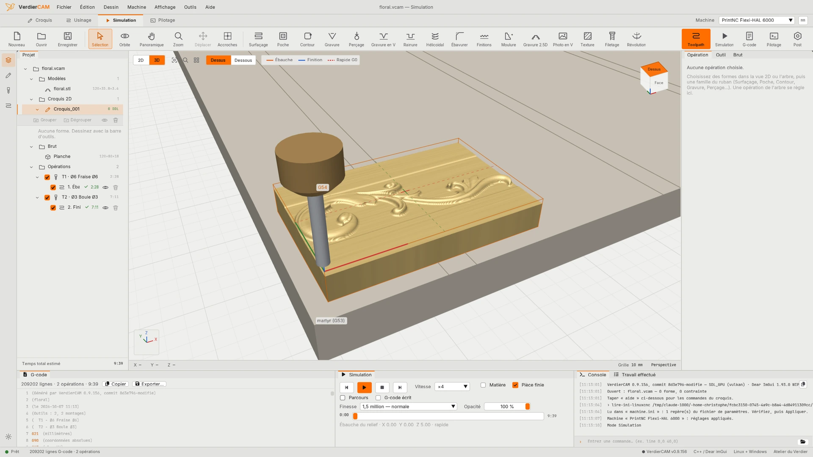
Voir le bois avant de le couper
La simulation enlève la matière comme la fraise le fera. Une erreur se voit à l'écran, pas sur la planche.
- La matière se creuse en direct, avec la veinure du bois — même sous la surface, quand une fraise en T creuse son aile.
- Vue en coupe : un plan qu'on fait glisser tranche la pièce et montre son profil exact. Vue en perspective ou orthographique.
- Lecture, pause, vitesse, position : on revient sur n'importe quelle passe.
- Une queue de fraise ou un porte-outil qui toucherait la pièce bloque l'export et le lancement.
- La matière enlevée s'affiche aussi pendant l'usinage, au pupitre.
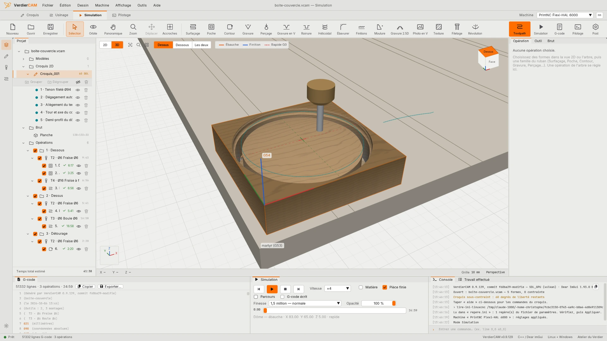
Lancer la machine depuis la même fenêtre
Le pupitre parle aux cartes GRBL et grblHAL. Pour les autres commandes numériques, VerdierCAM écrit le G-code qu'elles attendent : cycles de perçage, changement d'outil et longueur d'outil adaptés à chacune.
- Jog au pas ou en continu, palpage, changement d'outil guidé.
- Le cadre de la pièce parcouru avant de couper.
- Deux faces : goupilles ou butée, la pièce retournée retombe à sa place.
- Grands curseurs d'avance et de broche pour corriger en cours d'usinage.
- Onduler la broche contre le broutement, sans toucher au programme.
- Changeur d'outil automatique : le vrai changement d'outil s'écrit pour les machines qui en ont un.
- Un port série refusé par Linux ? VerdierCAM dit pourquoi et l'autorise en un clic.
- Ctrl + . arrête la machine, de partout.
- LinuxCNC
- GRBL
- FluidNC
- grblHAL
- MASSO (expérimental)
- Mach3 (expérimental)
- Mach4 (expérimental)
- UCCNC (expérimental)
Le pilotage direct, depuis VerdierCAM, se fait avec GRBL et grblHAL.
MASSO, Mach3, Mach4 et UCCNC sont expérimentaux : écrits d'après leur documentation, jamais essayés sur une vraie machine. Relisez le G-code et faites un passage en l'air avant de couper.
Essayez une pièce paramétrique, sans rien installer
Une pièce de VerdierCAM peut s'écrire en script : ses cotes deviennent des réglages. Changez-les ici, dans votre navigateur — le nombre de trous d'une manivelle, la taille d'un labyrinthe à bille, généré à chaque fois différent — et téléchargez le dessin en SVG ou en DXF, ou le script à rouvrir dans VerdierCAM.
- Le même calcul que le logiciel : le croquis contraint de VerdierCAM, compilé pour le navigateur.
- Rien n'est envoyé : tout se calcule sur votre ordinateur.
Bientôt disponible
La version 0.9.251 tourne tous les jours à l'atelier. La 1.0 sortira quand elle aura été validée sur le bois — pas à une date choisie d'avance.
Un simple courriel : vous serez prévenu le jour de la sortie, au prix de lancement. Votre adresse ne sert qu'à ça.
- Prix de lancement Payé une fois, à vous pour toujours — sans abonnement. 59 € TTC puis 79 € après la période de lancement Licence perpétuelle · un an de mises à jour compris · sur toutes vos machines · sans activation en ligne Ensuite, si vous le souhaitez : 29 € par an pour continuer à recevoir les mises à jour. Sans renouvellement, votre version continue de fonctionner. 15 jours d'essai complets : tout fonctionne, export du G-code et pilotage compris. Ensuite, le dessin et la simulation restent. TVA non applicable, art. 293 B du CGI.
- Linux Une AppImage, un seul fichier à lancer, sans installation.
- Windows 64 bits Un dossier à dézipper, sans installation non plus.
- En français L'interface, l'aide et les Premiers pas sont écrits en français, par un artisan français.
- À votre écoute Il vous manque quelque chose ? Aide › Suggérer une idée, dans le logiciel, ou un courriel : chaque idée est lue. Un souci ? Aide › Signaler un problème prépare un fichier avec ce que vous avez fait, à joindre au courriel.
Avant de l'installer
Quel ordinateur faut-il ?
Un PC 64 bits sous Linux ou Windows, avec une carte graphique compatible Vulkan, comme le sont les cartes AMD, NVIDIA et Intel de ces dernières années. L'interface s'agrandit de 80 à 150 % pour les écrans à haute densité.
Faut-il une connexion internet ?
Non. Tout se calcule sur le poste, relief par IA compris. La connexion ne sert qu'à télécharger le modèle du relief par IA (1,3 Go), si on le veut — une fois — et à dire, au lancement, si une version plus récente est publiée : le numéro de version passe au rouge en bas de la fenêtre, et un clic propose de la télécharger.
Ma machine est-elle prise en charge ?
Le G-code s'écrit pour LinuxCNC, GRBL, FluidNC, grblHAL, et, à titre expérimental — écrits d'après leur documentation, jamais essayés sur une vraie machine —, MASSO, Mach3, Mach4 et UCCNC. Le pilotage direct, depuis VerdierCAM, se fait avec GRBL et grblHAL.
Je dessine dans FreeCAD, Inkscape ou un logiciel de DAO.
Les esquisses FreeCAD (.FCStd), les SVG et les DXF s'importent
directement, et le dessin importé reste un croquis : il se contraint et se retouche.
Le dessin s'exporte aussi en SVG et DXF.
Est-ce seulement pour le bois ?
Le bois d'abord : c'est ce que l'atelier usine, et ce que la simulation montre avec sa veinure. Le calculateur de régimes connaît aussi le MDF, le contreplaqué, le plexi, le POM, l'aluminium, le laiton et l'acier doux.
Peut-on l'essayer avant de l'acheter ?
Oui : 15 jours d'essai complets dès le premier lancement, sans carte bancaire — il suffit de laisser votre nom et votre courriel, et le lien de téléchargement vous est envoyé. Tout fonctionne, export du G-code et pilotage de la machine compris — de quoi vérifier que votre carte GRBL ou votre LinuxCNC suit. Ensuite, le dessin et la simulation restent ; seuls l'export et l'envoi à la machine demandent une licence.
Comment s'active la licence ?
Elle arrive par courriel : un petit fichier à votre nom. Dans VerdierCAM, Aide › Licence…, puis « Choisir le fichier de licence… » : elle s'active aussitôt, sans connexion, et vaut sur toutes vos machines.
Comment passer à une nouvelle version ?
Quand une version sort, le numéro en bas de la fenêtre passe au rouge. Un clic : ce qui change, et « Télécharger ». Décompressez, lancez — vos réglages, vos outils et votre licence sont gardés. Pendant vos mises à jour comprises, chaque nouvelle version est à vous.
Il manque une chose dont j'ai besoin.
Dites-le : dans le logiciel, Aide › Suggérer une idée écrit le courrier pour vous ; ou écrivez à contact@verdiercam.fr. Chaque idée est lue par celui qui écrit VerdierCAM. Le logiciel est né dans un atelier ; il grandit avec ceux qui s'en servent — une fonction, un réglage, une machine, un mot mal choisi : tout compte.
Et le prix ?
Payé une fois, à vous pour toujours : une licence perpétuelle, la version achetée fonctionne pour toujours, sans activation en ligne et sur toutes vos machines. Un an de mises à jour est compris ; ensuite, les recevoir encore se renouvelle si on le souhaite, sans obligation, pour 29 € par an. 59 € TTC au lancement, puis 79 € (TVA non applicable, art. 293 B du CGI).